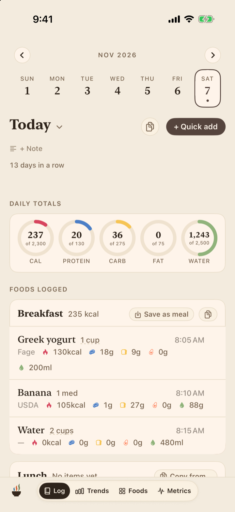
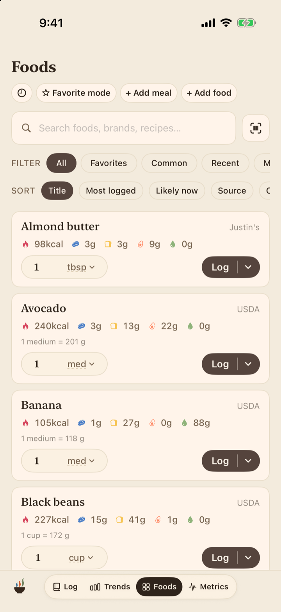
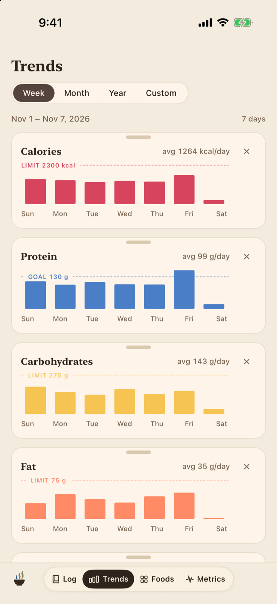
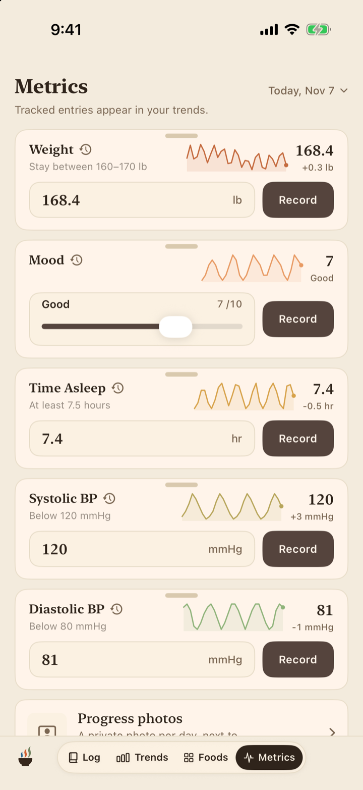
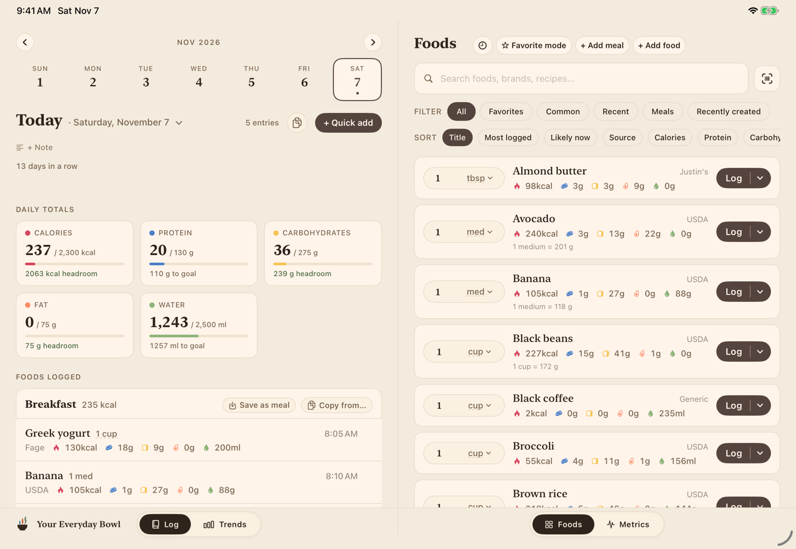

Your Everyday Bowl is a nutrition and personal metrics tracker for iPhone, iPad, and Mac. Everything you log lives on your own devices and in your own iCloud, and the app is yours with one purchase.
iPhone and iPad (iOS 18 or later) · Mac (macOS 15 or later)
A day in Your Everyday Bowl is simple: log what you eat, keep your foods organized, watch the trends, and track the personal metrics that matter to you.

Log meals in seconds from your own foods, a barcode, a photo of a nutrition label, or a plain description. Totals and targets update as you go.

Your personal library, backed by the USDA database, Open Food Facts, and a built-in restaurant collection. Build meals and recipes once, log them forever.

Charts for every nutrient you track, with daily, weekly, and monthly views, day notes, and a weekly digest of how things are going.

Weight, sleep, steps, blood pressure, or anything else you care about. Track built-in metrics or invent your own, with full history and charts.
One app for iPhone, iPad, and Mac, with one purchase covering all of them. Bigger screens show panes side by side, and optional iCloud sync keeps every device on the same page.

The essentials are fast, and the extras are there when you want them.
Scan a barcode, photograph a nutrition label, dictate a meal, or type a plain description. There is always a quick way in.
Optional AI features can read nutrition labels and estimate whole meals. They run through Apple's models or an AI company's model with your own key, and they are entirely optional.
Calorie and macro suggestions based on your profile and goals, with the math written out in plain language. You stay in charge of every target.
Import steps, workouts, and personal metrics from Apple Health, and write your nutrition back, all with your permission and only if you want to.
Beyond calories and macros: fiber, sodium, caffeine, or a custom nutrient you define yourself. Personal metrics work the same way.
Home screen and lock screen widgets, Siri logging, and gentle meal reminders keep the habit going without opening the app.
Build a meal once, record what the batch makes, and logging one serving or 300 grams of it both come out right.
Export a complete backup of everything at any time, and import it anywhere. Viewing and exporting your data never lock, ever.
No account and no server. The app works fully offline and even signed out of iCloud; sync is a choice, not a requirement.
Most trackers in this category are data businesses. Your Everyday Bowl is an app you buy, not a service that studies you.
Nothing is collected. No account, no analytics, no ads, no tracking. The developer never sees what you eat, what you weigh, or who you are.
Your data stays yours. Everything lives on your devices and, if you turn on sync, in your own private iCloud database that only your devices can read.
AI features are opt-in and under your control. They are off until you set them up, and when you use them they run through Apple's privacy protections or through an AI company you choose with your own key.
Comparable trackers charge $40 to $80 every year. Your Everyday Bowl costs less than half of one year of that, once.